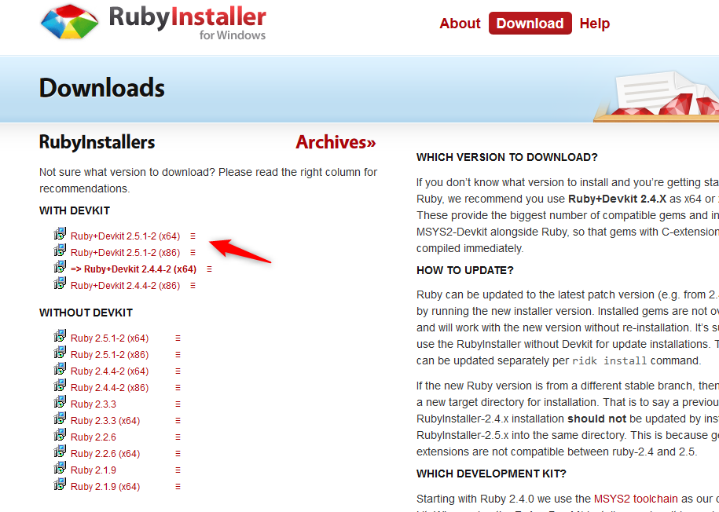
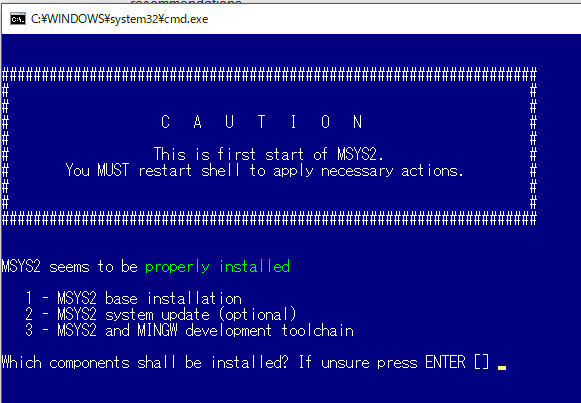
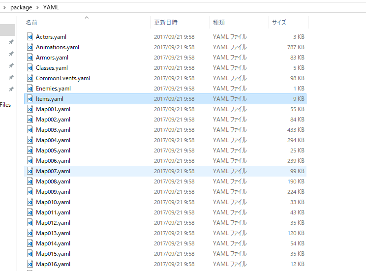

VX Aceプロジェクトのデータをテキストに変換する
概要
RPGツクールVX Aceのデータはプロジェクト内のDataフォルダに.rvdata2という形式で保存されています。
バイナリデータのため簡単に編集などはできないのですが、rvpackerというツールを使うと、テキストデータ(YAML形式)に変換することができます。もちろん、テキストデータから元のデータに戻すこともできます。
テキストデータにすることにより、会話やファイル名などの全置換を行うことができます。また、バージョン管理もしやすくなる利点があります。
Rubyのインストール
Windows10下でのインストールを説明します。rvpackerのInstallationも参照してください。
まず、Rubyをインストールする必要があります。
(Ruby Installer)[https://rubyinstaller.org/downloads/] からRuby+Devkitをダウンロードします(執筆時バージョンは2.5.1-2でした)
x64かx86かは環境に合わせてください。

ダウンロードしたら普通にインストールします。特に途中の選択肢は変更する必要ありません。
一緒にMSYS2もインストールする必要があり、最後に以下のようなプロンプトが立ち上がります。

ここで、1を押してエンターで、 MSYS2 base installationを選択します。
これでRubyの準備はできました。
rvpackerのインストール
Windowsに標準に付属しているPowerShellを立ち上げます。
gem install rvpacker と入力し、エンターするとrvpackerがインストールできます。
テキストデータに変換する
PowerShellで変換したいツクールのプロジェクト配下(Game.rvproj2があるフォルダ)まで移動します。
そこで rvpacker --action unpack --project ./ --project-type ace とコマンドを実行します。
すると、フォルダにScriptsとYAMLフォルダが生成されます。
ScriptsはRGSSスクリプトがruby形式になって保存されています。
YAMLフォルダ内に以下のように各rvdata2がYAML形式に変換されて保存されます。

中身は例えば、Items.yamlを見ると以下のようにテキストデータになっています。
---
-
- !ruby/object:RPG::Item
description: ''
name: マッチ
consumable: false
occasion: 3
icon_index: 530
price: 0
scope: 0
animation_id: 0
note: ''
speed: 0
id: 1
features: []
effects: []
damage: !ruby/object:RPG::UsableItem::Damage
type: 0
element_id: 0
formula: '0'
variance: 20
critical: false
success_rate: 100
hit_type: 0
itype_id: 2
repeats: 1
tp_gain: 0
Mapxxx.yamlはそれぞれのマップのイベントなどが記載されています。
メッセージなどがこのように確認できます。
- !ruby/object:RPG::EventCommand {i: 0, c: 505, p: [*2]}
- !ruby/object:RPG::EventCommand {i: 0, c: 101, p: ['', 0, 0, 2]}
- !ruby/object:RPG::EventCommand {i: 0, c: 401, p: [エルル「なぁに、\|父さん」]}
- !ruby/object:RPG::EventCommand {i: 0, c: 101, p: ['', 0, 0, 2]}
- !ruby/object:RPG::EventCommand {i: 0, c: 401, p: [父「この間、隣のおばさんに聞いたんだが、\|]}
テキストから元のデータに戻す
逆にテキストから元のデータに戻す際は以下のようにコマンドを打ちます。
rvpacker --action pack --project ./ --project-type ace
まとめ
テキストデータにして編集することはできるにせよ、編集に失敗するとデータを壊す元になるのでバックアップをとってから、慎重に使いましょう。